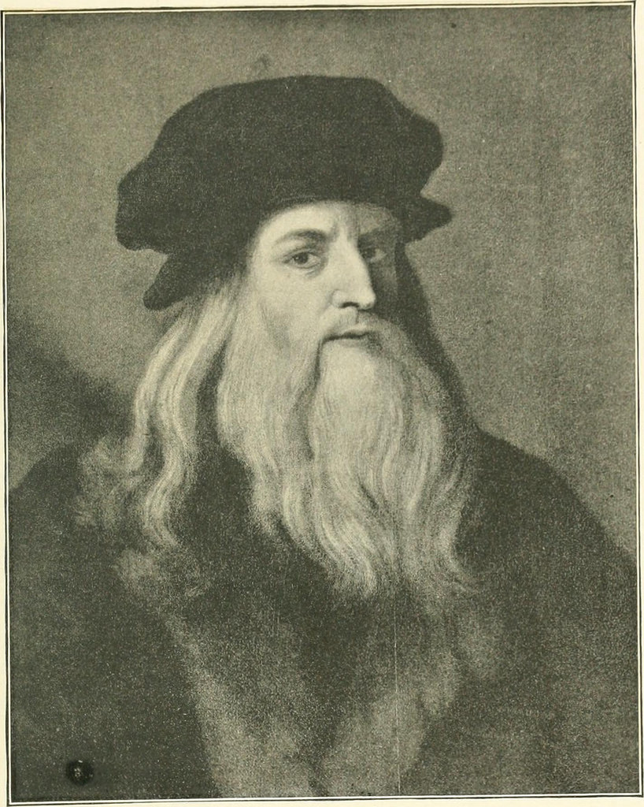
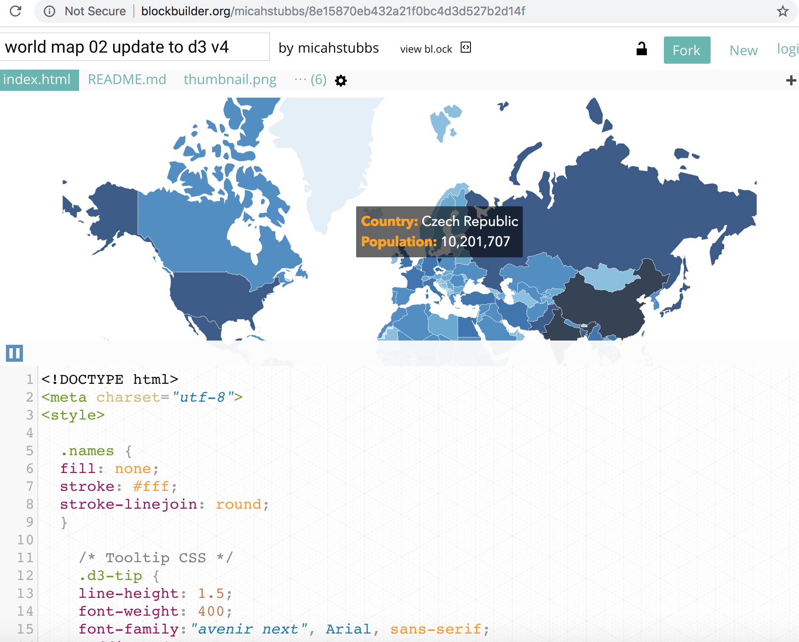
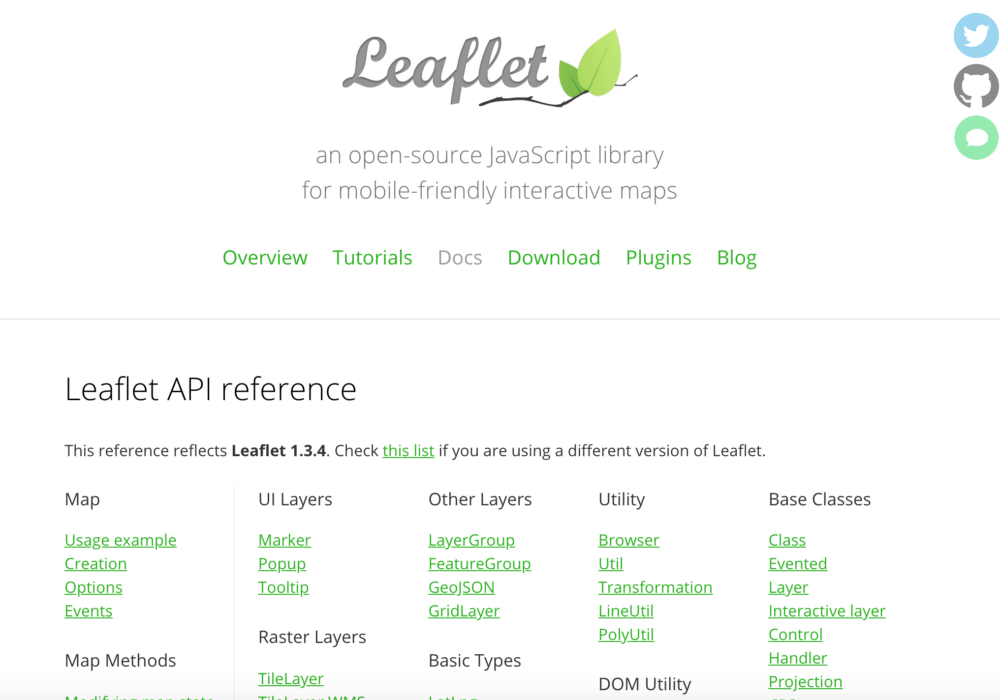
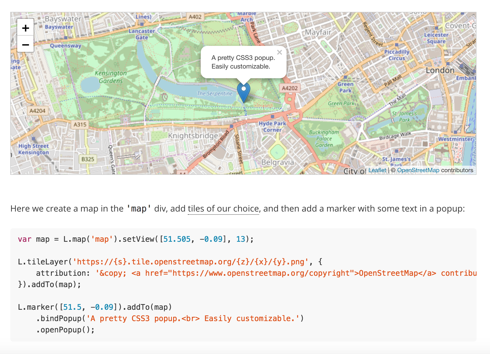
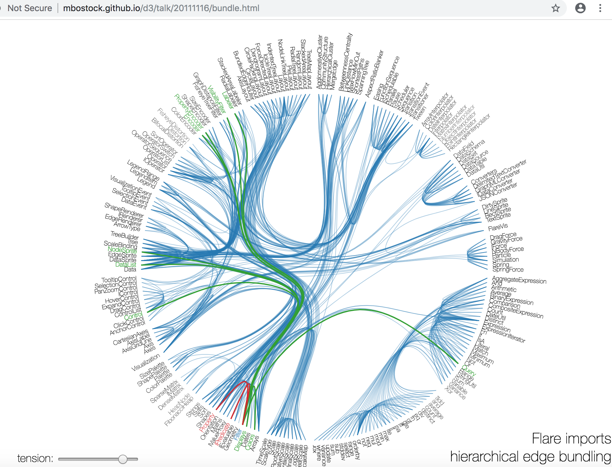
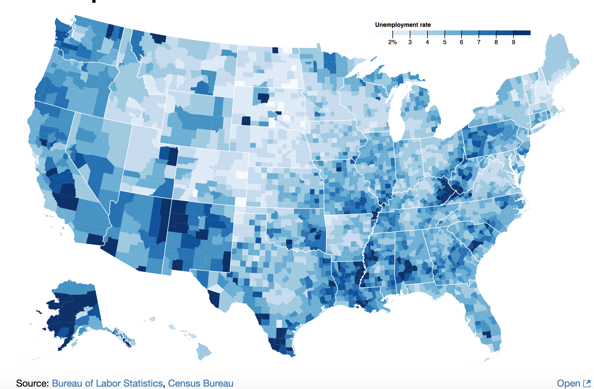
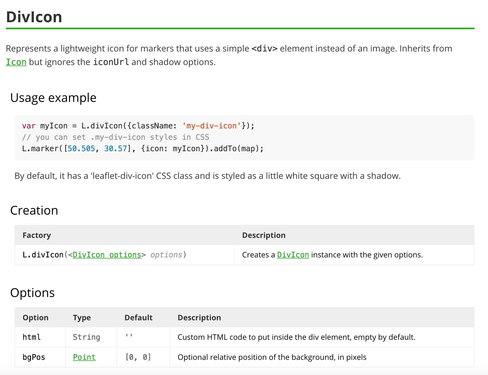
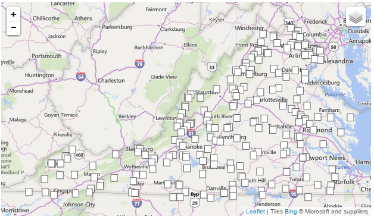
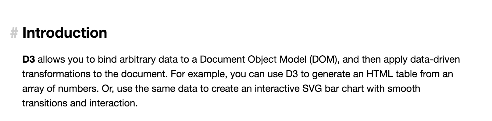
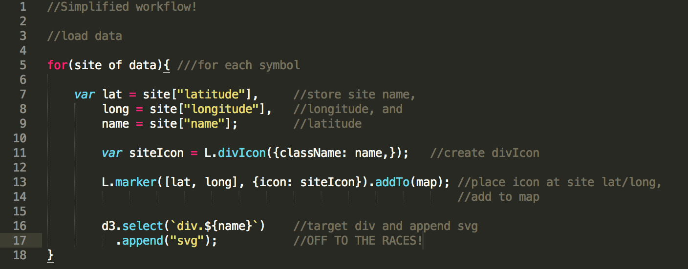

Cartography - Data Journalism - Design
D3 and Leaflet, BFF's?
Cartography Lab Education Series(CLES) 9/17/18

The modern cartographer has a simple choice: renaissance (wo)man or dinosaur?
Though this talk focuses on D3 and Leaflet, combining multiple tools effectively is essential to all modern cartographic workflows. Key takeaways:
- Because there are many tools available, with overlapping functions, there are many ways to make the same map
- Tools(D3, Leaflet, ArcGIS, Illustrator) have an optimal range of functionality
- Use what you already know, survey what's already been done(Google, Stack Overflow, blockbuilder.org)
- Choose tools with good documentation, tutorials, community


The challenge:
Interactive map with slippy map functionality(pan&zoom), plus custom data-driven symbols to represent multivariate, temporal point data: Flyover Country Visualization Suite
The characters:
Leaflet: Javascript library for web mapping, make slippy maps(pan and zoom), serve basemap tiles very easily:

D3: Javascript library for web mapping, draw shapes with SVG in browser, "bind" data to shape attributes:


D3 and Leaflet are both Javascript mapping libraries, so how are they different?
Back to the challenge: which tools should I use?
Both Leaflet and D3 were perfect for pieces of the puzzle I was trying to solve, but not the whole puzzle.
- Leaflet is perfect for slippy map functionality and symbol repositioning, but not built to incorporate custom SVG symbols.
Leaflet icons
- D3 is a dreamboat for drawing custom SVG based on data, but more of a challenge to implement pan/zoom/tile service/symbol repositioning(might be possible?)
D3 pan&zoom
Solution: Use Both!
*Googling and documentation reading ensue*
Nothing quite fits the ticket...
Bostock Leaflet+D3
D3 Noob
Until...

DivIcon, the diamond in the rough, the secret sauce!

Seems underwhelming, why am I so excited?

Since "div" exists in DOM, we can target with D3:

This workflow can be used to draw any kind of data-driven SVG symbol, and Leaflet will handle positioning!
The final product:
Flyover Country Visualization Suite
And also used here:
Wilder than the National Parks
Positives:
- Uses both Leaflet and D3 in their optimal range of functionality("party zone")
- Solution uses only native D3 and Leaflet functions, eliminating bulky Leaflet plugins
- Was concerned about loading speed drawing hundreds of complex SVG shapes, but works smoothly!
- Incorporated preexisting knowledge
- Can now share with community!
Jealous dinosaur: